汇聚资源 | 郑州工博会出席并赞助2023年度新型工业化发展论坛
首页 / 汇聚资源 | 郑州工博会出席并赞助2023年度新型工业化发展论坛
1月19日，2023年度新型工业化发展论坛暨河南省电工行业协会年终总结表彰大会在河南郑州隆重举办。本次会议由河南省电工行业协会主办，河南省工业和信息化厅节能与综合利用处处长李凯钊、新乡市平原示范区市场监督管理局局长王永刚等领导出席，来自电工行业专家学者、企业家代表等300余人齐聚一堂，为扎实推进新型工业化，促进河南省电工行业转型发展群策群力。郑州工博会主办方郑州振威名海会展有限公司作为赞助单位，为本次盛会增添更多精彩。
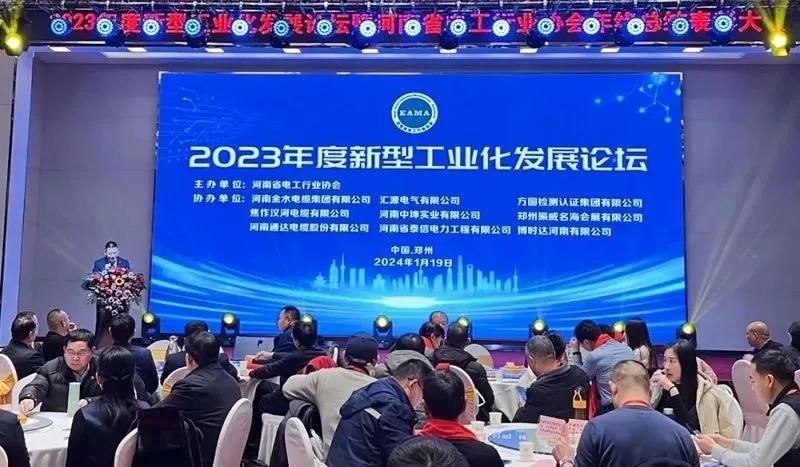
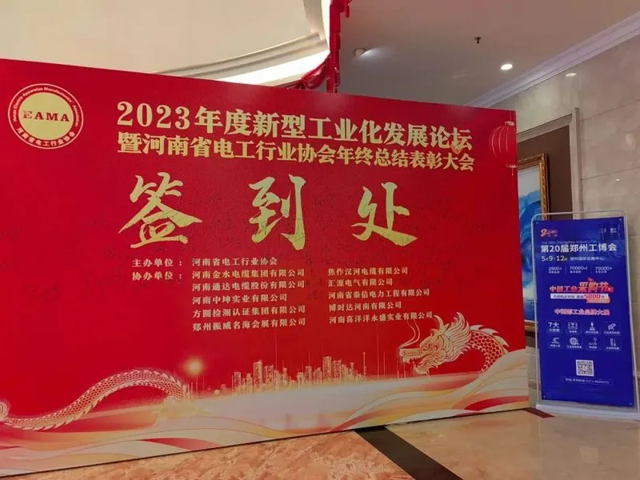
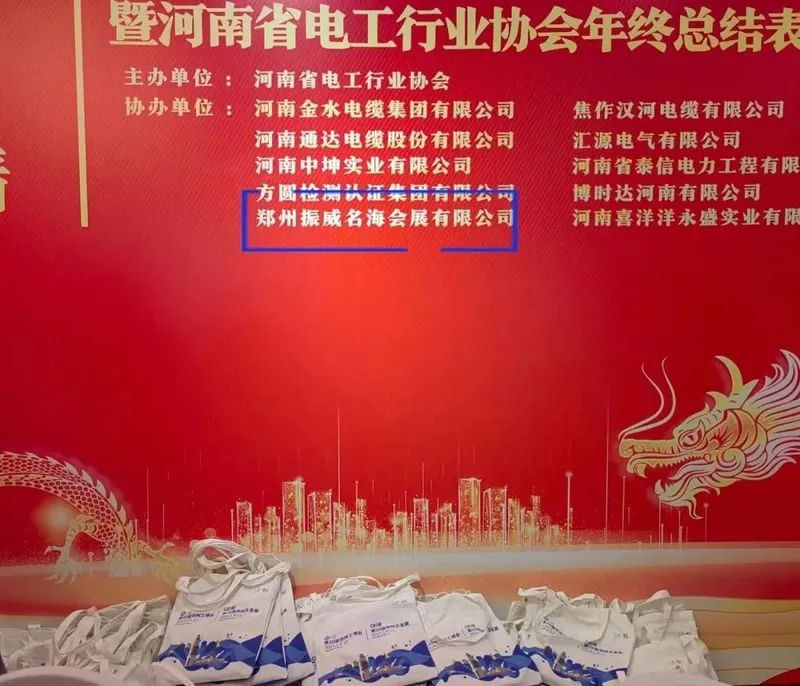
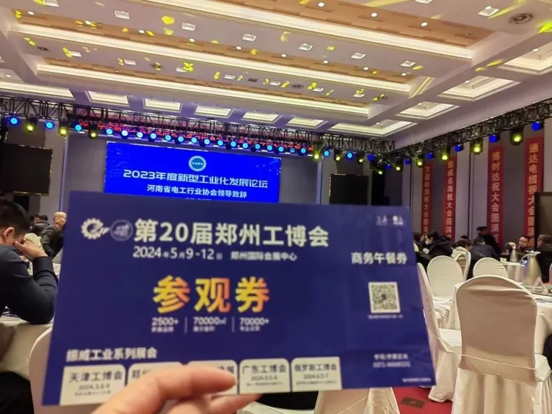
大会聚焦数字化和绿色化融合发展赋能新型工业化这一主旨，分为新型工业化发展论坛和河南省电工行业协会年终总结表彰大会两个专场。
在论坛环节中，河南省电工行业协会会长金世强做开场致辞，他指出新型工业化是大势所趋、机遇所在，是现代化的必由之路。衷心希望以本次大会为契机，充分发挥行业协会的桥梁纽带作用，深入汲取行业精英的智慧结晶，全面推动我省新型工业化发展迈上新台阶。
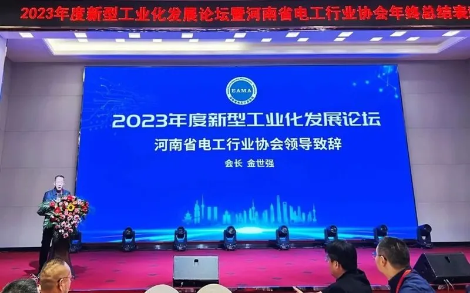
本次论坛特邀请了省工信厅领导和行业专家进行精彩分享。河南省工业和信息化厅节能与综合利用处处长李凯钊就《新型工业化发展之路》做主题演讲，正泰集团电器股份市场战略部副总经理徐晓东带来《扬帆双碳新蓝海 开拓数智新未来--正泰集团创新发展实践》主题分享，国网河南省电力公司物资部原总经理薛洛良就国网公司招标政策进行解读三信国际检测认证有限公司总经理柯文斌宣讲了《绿色低碳认证评价助力电工行业发展》。
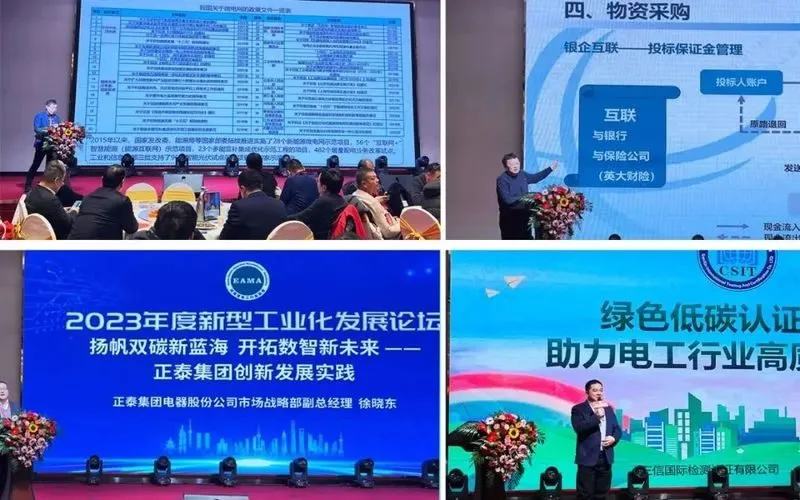
郑州工博会作为中西部工业品牌大展，一直致力于推动河南制造业的创新与发展，郑州振威名海作为此次会议的协办单位，对大会进行全面赞助，将全力支持协会和会员企业的发展。
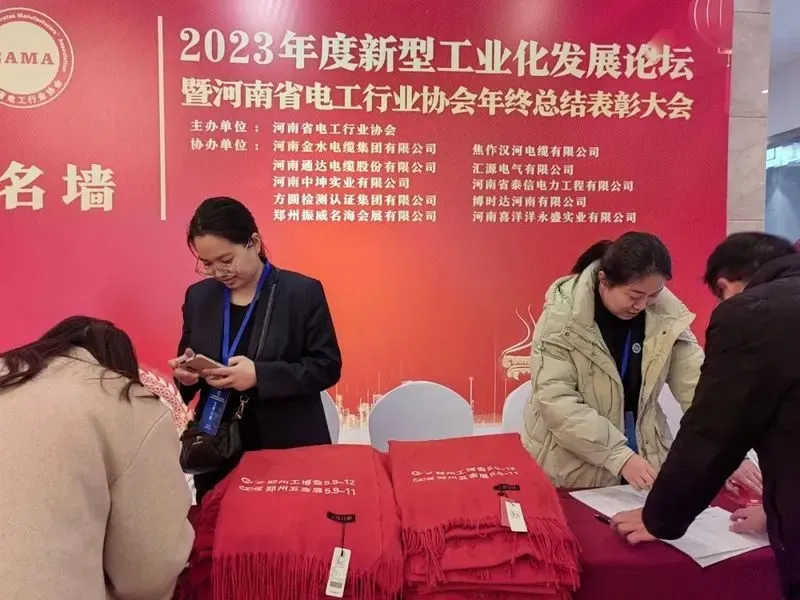
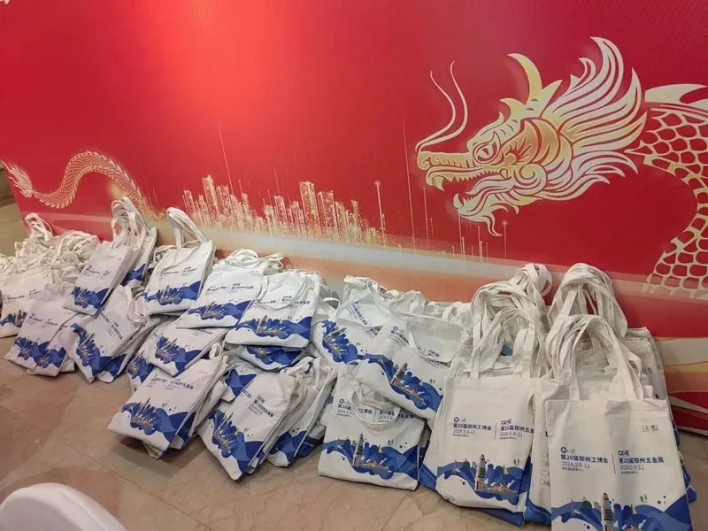
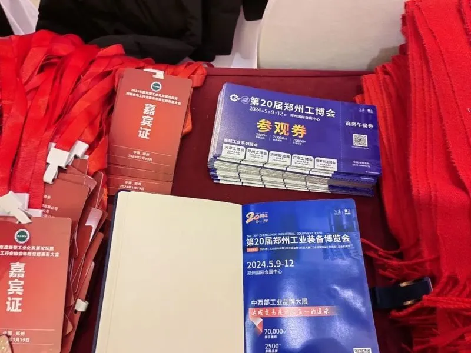
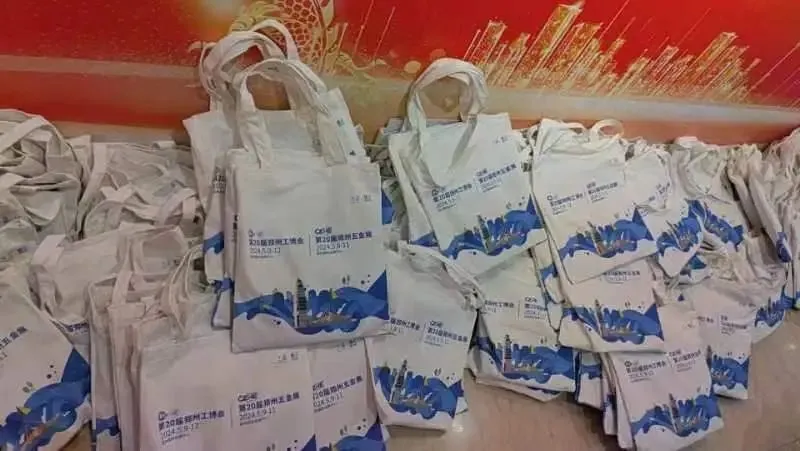
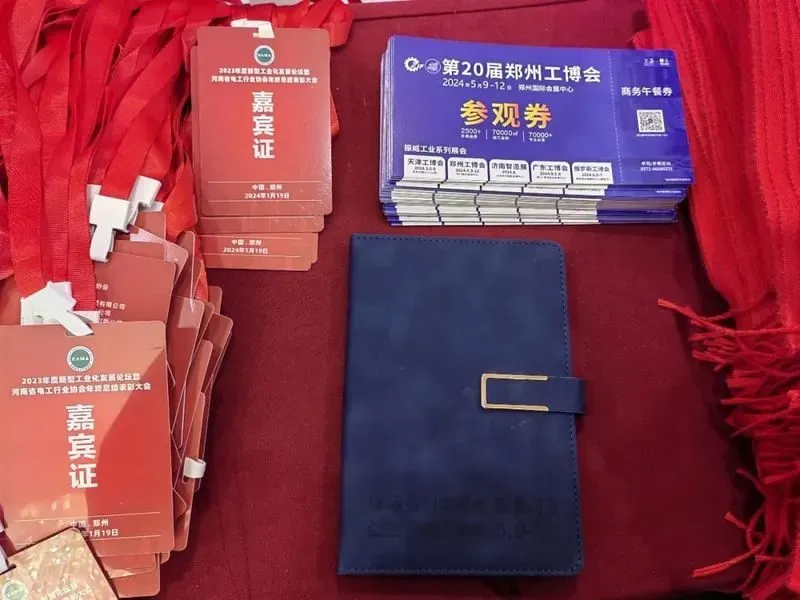
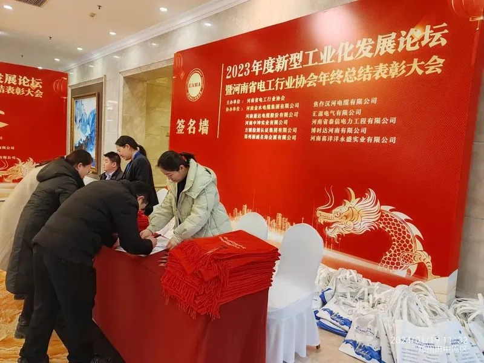
对大会赞助围巾、手提袋、商务笔记本等礼品
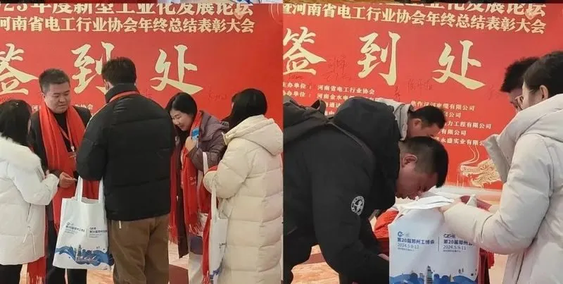
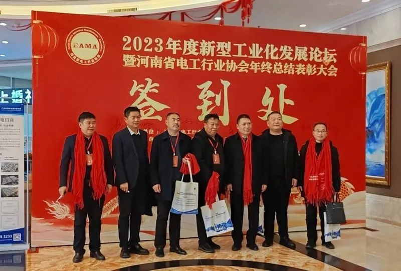
郑州工博会观众组织部负责人王孟与河南电工行业协会主任毕胜宾介绍当前郑州工博会进展、亮点等情况，毕胜宾主任对展会给予充分的肯定。河南电工行业协会作为展会支持单位，也将对就展会招商、观众组织、论坛会议等，达成深度战略合作，未来，双方将秉承资源共享，加快深度合作，推动合作事项走深走实，通过展会平台推动制造业的交流与发展，共同助力装备制造产业的壮大。
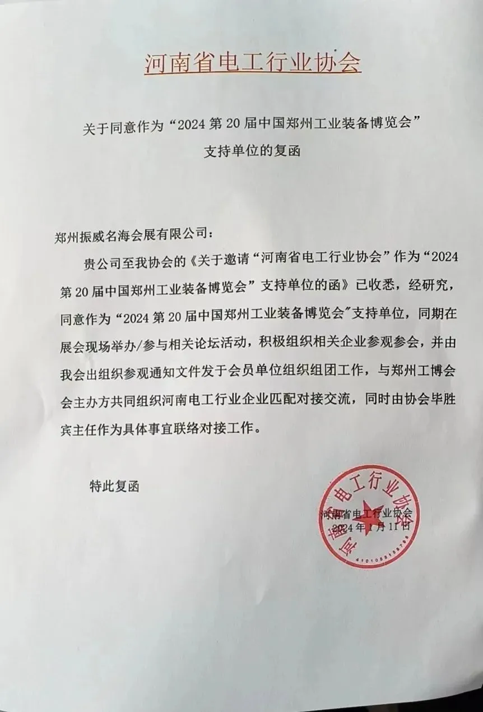
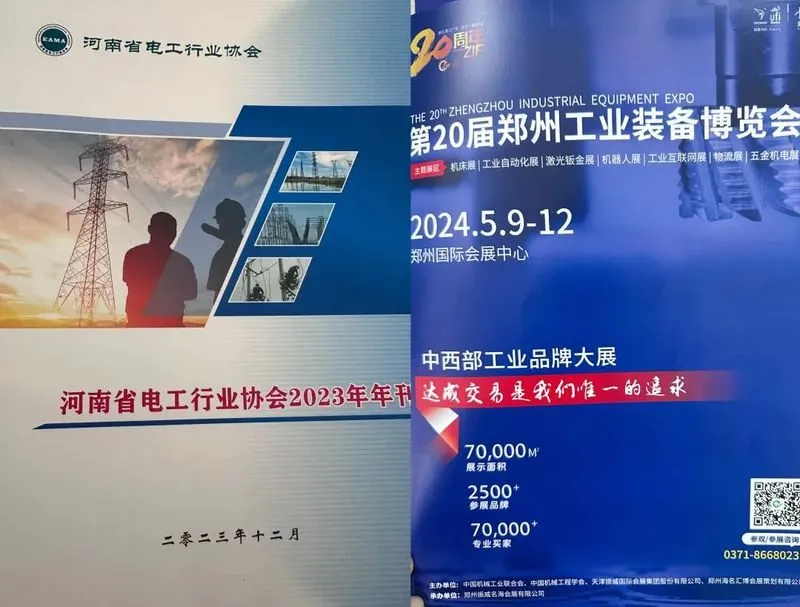
在河南省电工行业协会2023年年刊上刊登郑州工博会彩页
现场与河南金水电缆集团、焦作汉河电缆、河南通达电缆、汇源电气、河南中坤实业、河南省泰信电力工程、方圆检测、河南淇源电力、河南泰信电力、河南泰隆电力等企业代表、行业内人士沟通交流、探讨合作，并组织邀请参加5月9-12日郑州工博会。
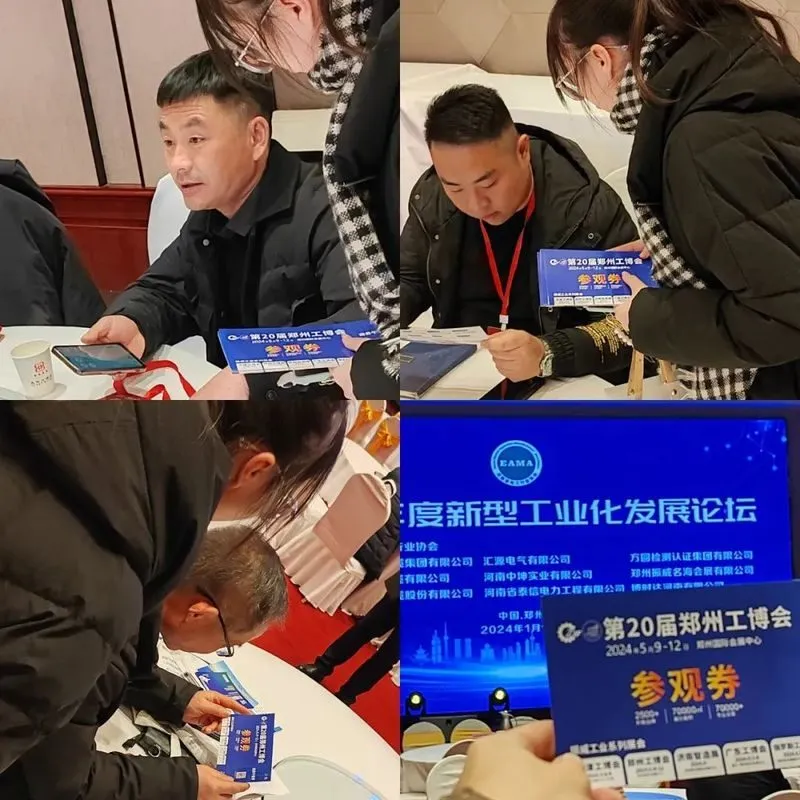
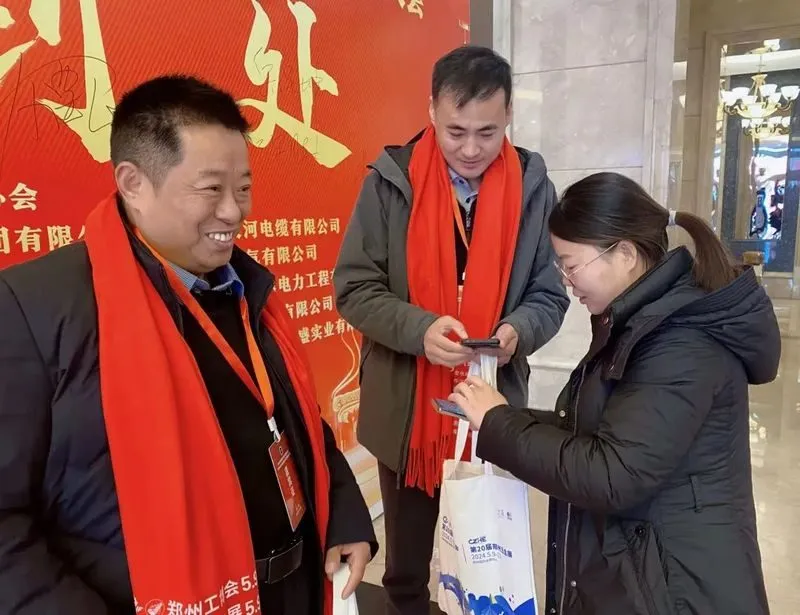
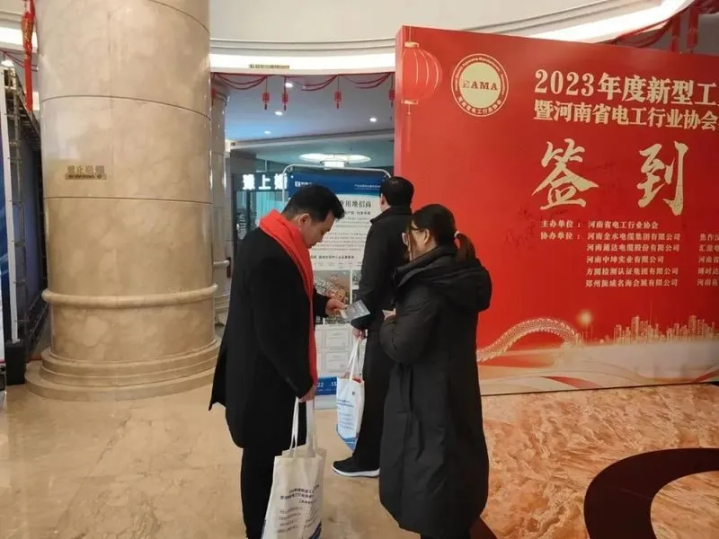
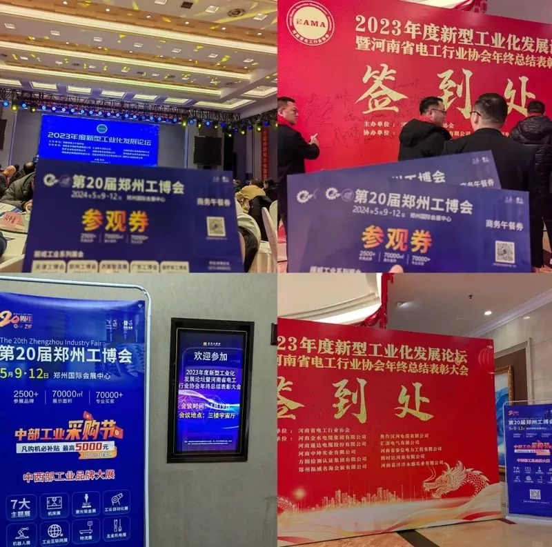
·END·
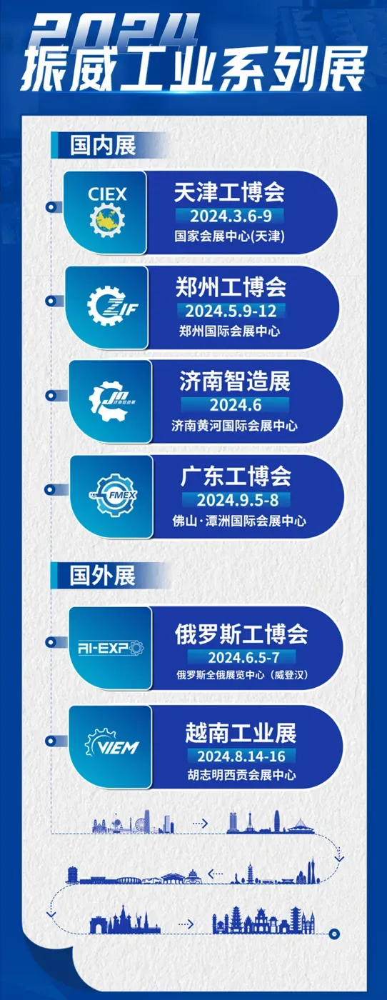